3.1 CONSULTAR DISPONIBILIDAD DOCENTE
Esta funcionalidad permite visualizar un horario distribuido por días de la semana, de la disponibilidad del docente para ofrecer atención a los estudiantes, o brindar asesorías.
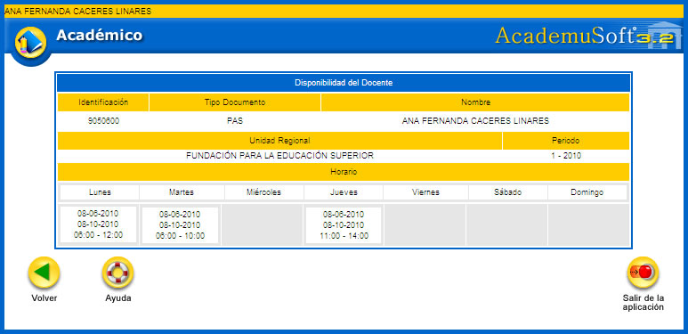
Esta funcionalidad permite al docente visualizar el horario por grupos de las materias asignadas por el mismo. Muestra el día, grupo, recurso físico (aula, laboratorio) y rango de horas de la clase. Dispone de la opción Imprimir.
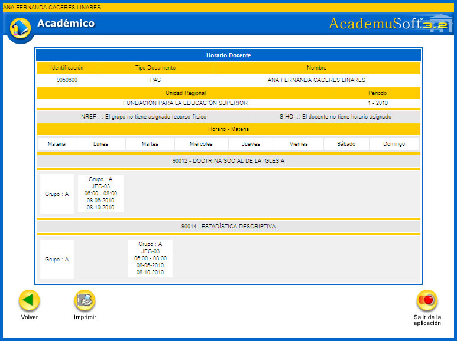
Opción Imprimir: permite generar un reporte del horario del docente en formato PDF, tal como se muestra en el siguiente ejemplo:
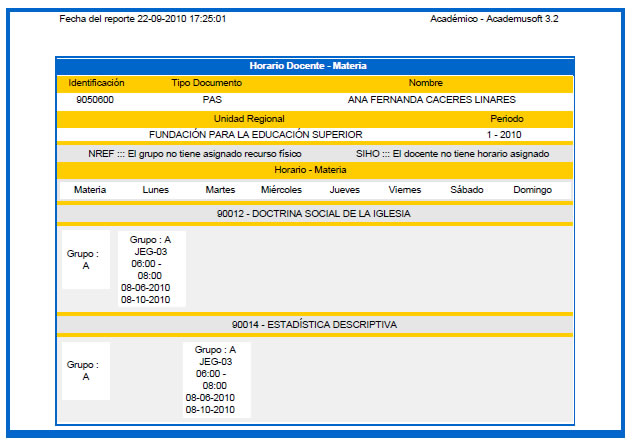
3.3 HORARIO DE ATENCIÓN AL ESTUDIANTE
Esta funcionalidad permite al docente gestionar el horario de atención que podrá ofrecerle a los estudiantes dentro de su jornada laboral. El sistema lista las materias y grupos que tiene asignados. Hay que elegir el grupo de interés y luego dar clic sobre la opción Continuar.
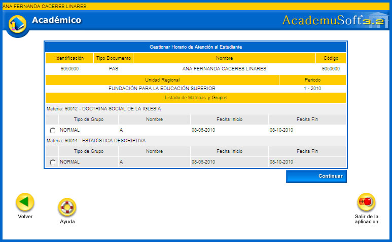
El sistema despliega una interfaz en la cual el docente puede diligenciar el horario en el cual va a brindar atención al estudiante, hay que elegir el día, fecha inicio y fecha fin, el tipo de horario, hora inicio y hora fin. Terminada la gestión se debe dar clic sobre el botón Agregar. Los registros se van adicionando al panel de Horario. Finalmente es preciso hacer clic sobre la opción Registrar. El sistema solicita la confirmación del proceso, si la respuesta es afirmativa se emitirá un mensaje indicando el éxito del mismo. En la parte inferior se encuentra la opción Imprimir.
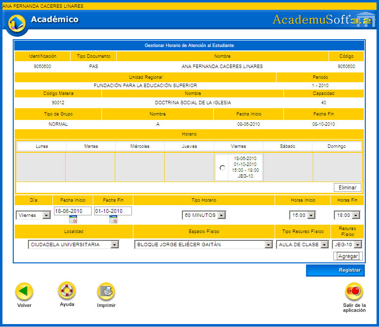
Opción Imprimir: permite generar un reporte del horario adicional para atención al estudiante que es gestionado por el docente, se encuentra en formato PDF, tal como se muestra en el siguiente ejemplo:
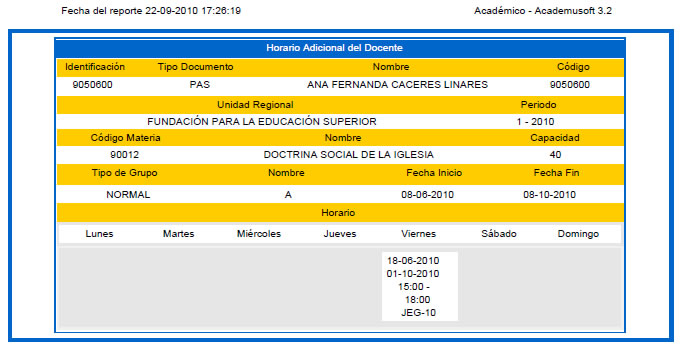
3.4 CONSULTAR HORARIO DE ATENCIÓN AL ESTUDIANTE
Esta funcionalidad permite al docente consultar el horario de atención al estudiante que ha gestionado anteriormente.
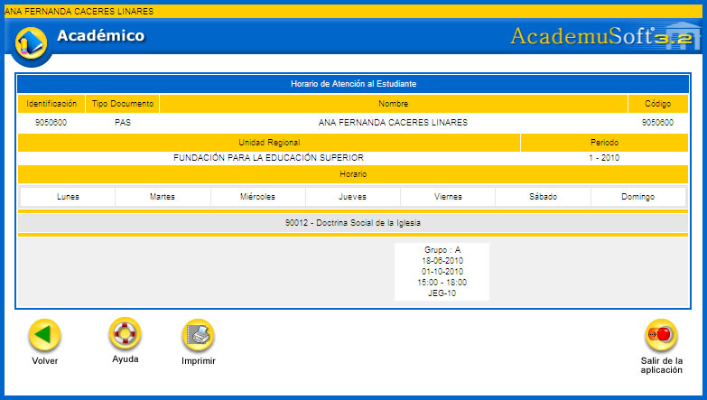
Opción Imprimir: permite generar un reporte del horario del docente para brindar atención al estudiante en formato PDF, tal como se muestra en el siguiente ejemplo:
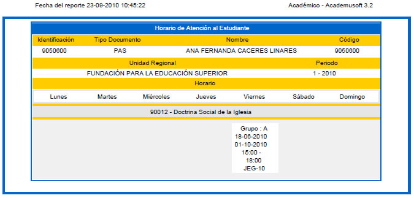
Esta funcionalidad permite al docente consultar las materias que ha tenido asociadas el docente según la trayectoria laboral que ha tenido en la institución educativa.
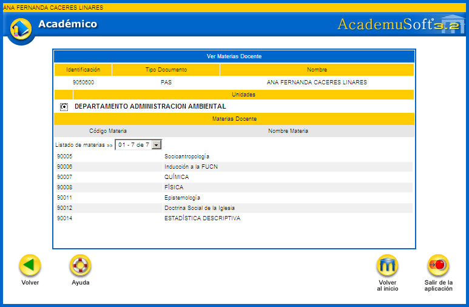
Funcionalidad que permite al profesor gestionar el registro de escalafón y dedicación docente asociado a un periodo. Esta actualización involucra la gestión de la carga académica y administrativa que le hayan asignado dnetro del periodo académico.
Este proceso busca mantener por periodos académicos un registro histórico del escalafón, dedicación y carga asignada a los docentes en la institución educativa, esto con el fin de planificar algún tipo de reconocimientos ya sean de tipo salarial o de entrega de alguna clase de incentivos o simplemente tener informes de la carga docente y administrativa entregada al mismo.
Para la activación de este proceso el administrador del sistema debe habilitar las fechas de CARGA de la responsabilidad académica del docente en el módulo de Responsabilidad Académica / Tablas básicas/Parametrizar fechas de responsabilidad.
Al ingresar a esta funcionalidad se debe elegir el periodo académico, luego hay que hacer clic sobre la opción Continuar.
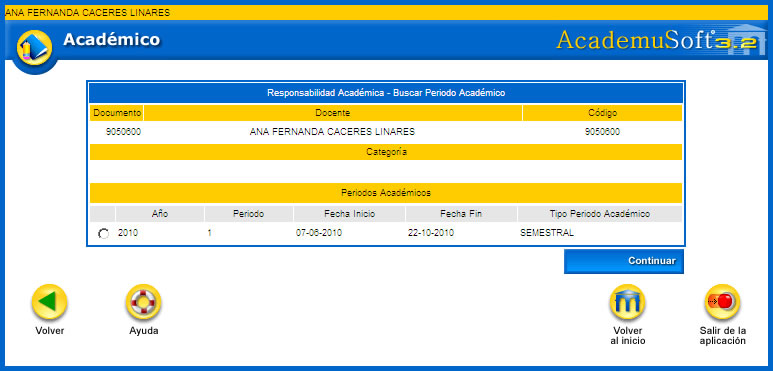
Inicialmente el sistema no muestra ningún registro. En este caso se debe dar clic sobre la opción Agregar. Además dispone de las opciones: Ver, Aprobar y Continuar. Se aclara que la única persona que puede aprobar una carga académica es la que se encuentra clasificada dentro de los niveles de revisiones en el ORDEN 1. En algunos casos puede ser un director de programa, jefe de departamento o Vicerrector Académico (esto depende del organigrama y de las funciones asociadas al cargo en la institución).
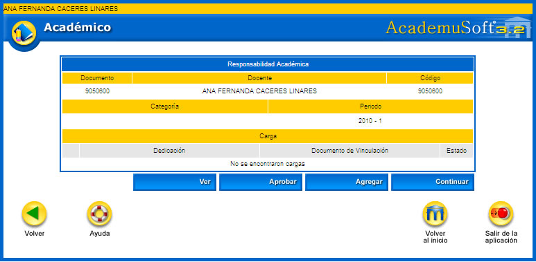
Al dar clic sobre ésta opción, se despliega una interfaz en la cual el docente debe dar clic sobre la lupa  , para que se habilite una ventana emergente que muestra las vinculaciones propias del docente.
, para que se habilite una ventana emergente que muestra las vinculaciones propias del docente.
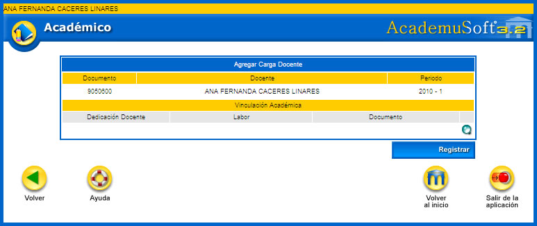
En el siguiente ejemplo se muestran varias vinculaciones que ha tenido el docente en toda su trayectoria laboral. Hay que seleccionar el registro de su interés dando clic sobre el hipervínculo para que éste sea cargado en el ítem de Vinculación académica.
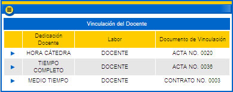
Finalmente se debe dar clic sobre la opción Registrar. El sistema genera un mensaje en el cual solicita al docente: ¿Está seguro que desea agregar la carga académica a la vinculación docente?, si la respuesta es afirmativa, el registro queda cargado tal como se muestra en el siguiente ejemplo:
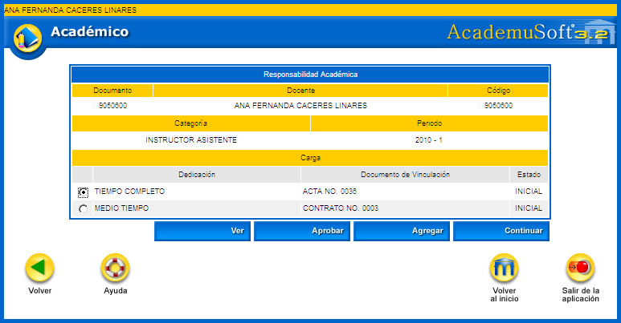
Permite previsualizar un listado de las actividades que ha gestionado el docente durante su proceso de carga académica. En el siguiente ejemplo se pueden apreciar varios ejemplos de las actividades en las cuales puede estar involucrado un profesor, dentro de ellas están: Actividades académico-administrativas, de investigación, de proyección, de docencia y asesorías, cada una de éstas con el respectivo tiempo medido en horas. Dispone de la opción Imprimir.
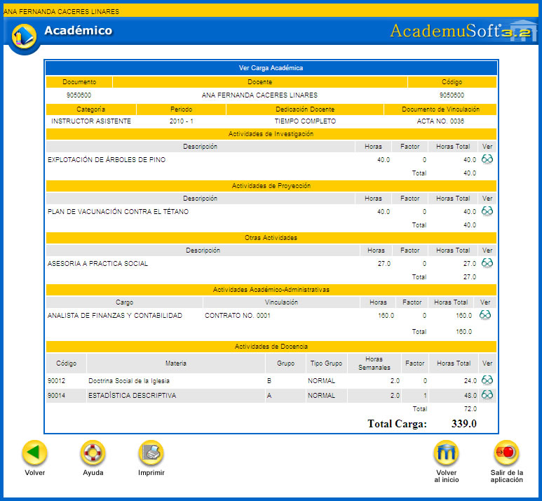
Opción Imprimir: permite que el docente descargue en formato PDF el resumen de la carga académica que ha sido diligenciada previamente. A continuación se muestra un ejemplo de este reporte:
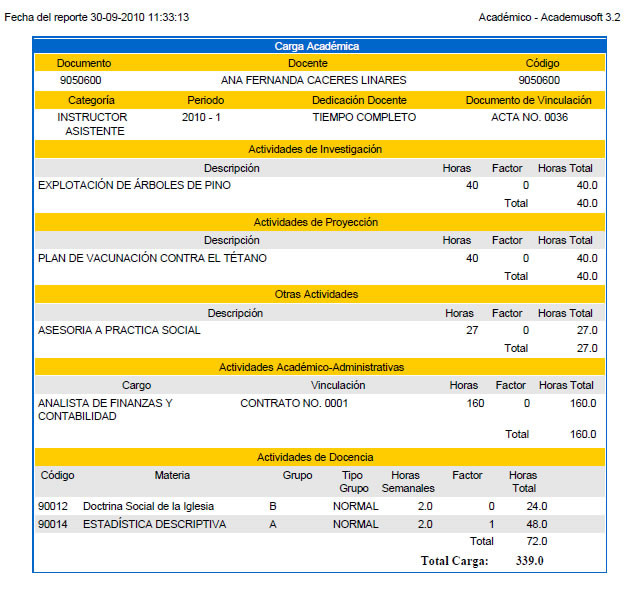
Esta opción permite que el docente ingrese a la funcionalidad que involucra los procesos de gestión de docencia o clases asignadas, investigación, proyección social, actividades académico administrativas y otras actividades que pueden estar relacionadas con asesorías y consultorías generales que ofrezca el profesor adscrito a un departamento o a una facultad.
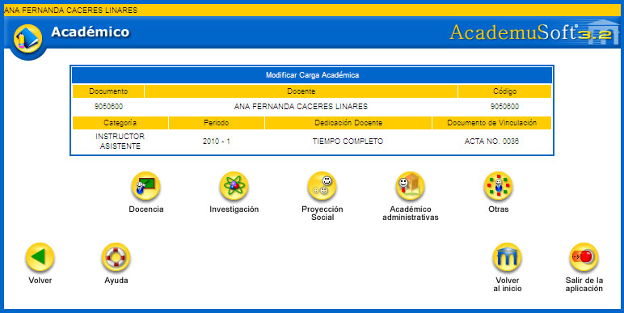
5.3.1 Docencia. Esta funcionalidad permite al docente activar las materias que le han sido asignadas en el módulo de Carga Administrativa. Las materias están asociadas con la unidad académica. Activar la materia dentro de las actividades de formación permitirá acumular ciertos puntos de valoración que dan en las diferentes IES para obtener algún tipo de reconocimiento en el aspecto laboral o un incremento a nivel salarial, depende de los manejos de los estatutos docentes aplicados en la institución. Dispone de las opciones Ver y Asignar.
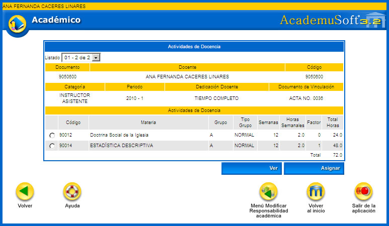
Opción Ver: permite previsualizar la actividad de docencia asociada con la materia que dicta el docente.
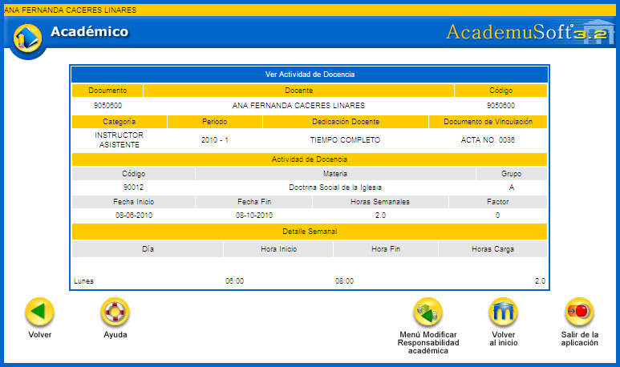
Opción Asignar: permite que el docente asocie a la materia de su carga académica el TIPO DE CLASE y la CONTINUIDAD. Estas dos variables pueden o no tener asignado un factor que representa una fracción de tiempo asignada para la preparación de las clases y las evaluaciones del docente. Una vez se tengan diligenciados estos datos se debe dar clic sobre la opción Registrar. El sistema solicita la confirmación de la ejecución del proceso. Si la respuesta es afirmativa se genera un mensaje indicando que el proceso se ha realizado en forma satisfactoria.
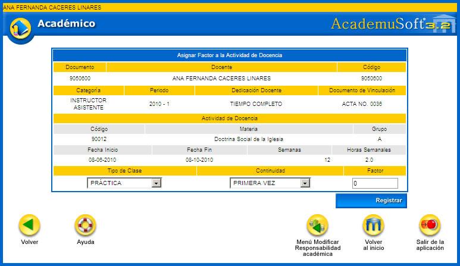